H.P.canvas
フォトポスト（園写真受付システム）／フォトソート（自動フォルダ分け）
写真の送り方ガイド
園のパソコンから、写真をそのまま送信できます（フォトポスト）。
送っていただいた写真は、お子さまごと・行事ごとに自動でフォルダ分けします（フォトソート）。
行事予定表などのPDFも、同じ手順で送信できます。難しい準備は不要です。
送る手順は、5つだけ
実際の画面のイメージを、そのまま並べています。
園専用ページを開く
上の「園専用URL」を開きます。Chrome・Edge・Safari など、いつものブラウザでそのまま開けます。
パスワードを入れて「開く」
上の「パスワード」を入力し、開くを押すと、写真を送る画面になります。
写真の入ったフォルダを選ぶ
「📁 フォルダを選ぶ」を押すと、フォルダを選ぶ小窓が開きます。写真をまとめている親フォルダ（例：2025年度）を選んでください。親フォルダは開かず、選ぶだけで大丈夫です。子フォルダ（クラスや行事）を選ぶと、その子フォルダの写真だけを送信します。行事予定表などのPDFが同じフォルダに入っていても、そのまま一緒に送信できます。
送るフォルダにチェックを入れる
フォルダ内の一覧が出ます。送りたいフォルダにチェックを入れてください。複数まとめて送信可能です。
「チェックした写真を送る」を押す
枚数が多くても大丈夫です。送信が完了すると「ありがとうございました」とメッセージが表示されます。
PDFが含まれているときは、ボタンの表示が「チェックしたデータを送る」になります。そのままそのボタンを押していただければ、写真もPDFも一緒に送信されます。
システムの特徴
送信を途中でやめても大丈夫
もう一度同じ写真を選び直せば、送信済みは自動でスキップし、未送信の分だけを送信します。
同じ写真を送っても大丈夫
既に送信済みの写真は自動でスキップされます。「送ったかな？」と迷われる時は、多めに送信されることをお勧めします。
園ごと・行事ごと・季節ごとなど自動でフォルダ分け
園様の用途に合わせたフォルダ分けをいたします。
行事予定表などのPDFも送れます
PDFも写真と一緒に送信可能です。複数枚連続するPDFを送信される場合は、ファイル名を「01_表紙」「02_ちゅうりっぷ組」のような付番をお願いします。
カメラの日時設定をご確認ください
カメラの日時設定がされていない写真には、撮影日時情報が残りません。日時情報がないと、アルバム制作やフォルダ分けに大きな支障をきたします。年度初めや、久しぶりに使われる際には日時設定をご確認ください。
スマートフォン・タブレットは自動で合いますので、確認は不要です。
URLとパスワードの取り扱い
URLはブックマークをお勧めします。パスワードは園の外には出さないようにお願いいたします。
よくあるご質問
先生方からよくいただく疑問を、章ごとにまとめました。同じ内容を漫画でも読めます（PDF）。
🐼 漫画で見る（PDF）
1写真の送り方12問
押すのは3回だけ。迷ったら「いちばん外側のフォルダ（親フォルダ）」
- Q1写真は、どこから送るの？
- ご案内メールに記載した園専用URLから送信可能です。操作園専用URLを開く → パスワードを入れる → 「開く」を押す
→ 図解を見る
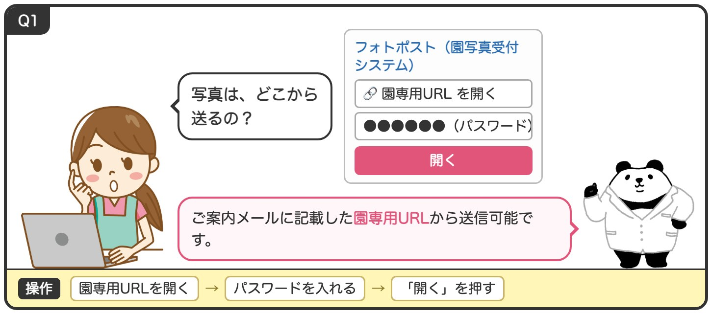
画像を押すと大きく開きます - Q2インストールや登録は必要？
- 不要です。園のパソコンのブラウザだけで送っていただけます。
→ 図解を見る
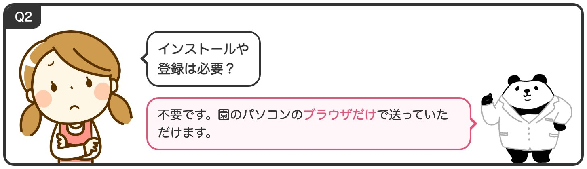
画像を押すと大きく開きます - Q3「フォルダを選ぶ」で、どのフォルダを選べばいい？
- いちばん外側のフォルダ（親フォルダ）です（例：2025年度）。親フォルダは開かず、選ぶだけで大丈夫です。
→ 図解を見る
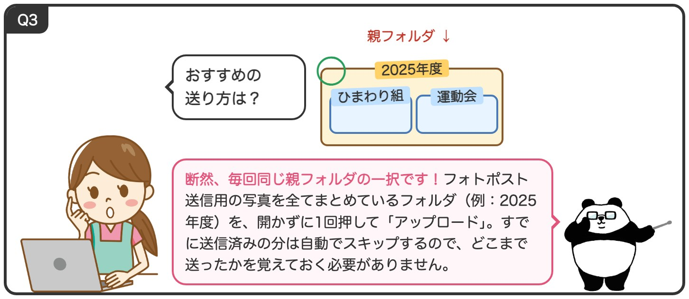
画像を押すと大きく開きます - Q4フォルダが多いとき、どれを選ぶ？
- 全部をまとめているいちばん外側のフォルダ（親フォルダ）を選んでください。親フォルダ内にある子フォルダを選ぶと、その子フォルダのみを送信します。操作子フォルダを選んでしまったら → 「📁 フォルダを選ぶ」で親フォルダを選び直す → 再送信
→ 図解を見る
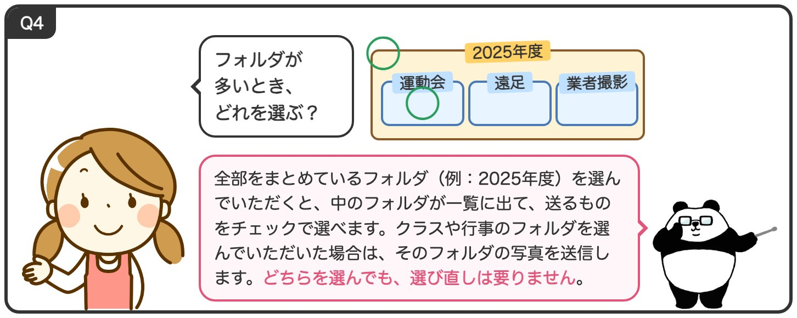
画像を押すと大きく開きます - Q5全部じゃなくて、一部だけ送りたい
- 一覧で、送りたいフォルダだけにチェックを付けてください。チェックしたフォルダの写真だけを送信します。
→ 図解を見る
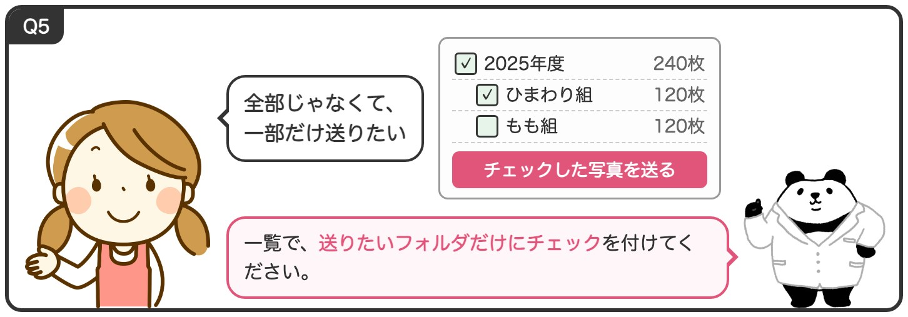
画像を押すと大きく開きます - Q6枚数が多くて時間がかかる。途中でやめてもいい？
- 大丈夫です。もう一度送っていただくと、未送信分が送信されます。
→ 図解を見る
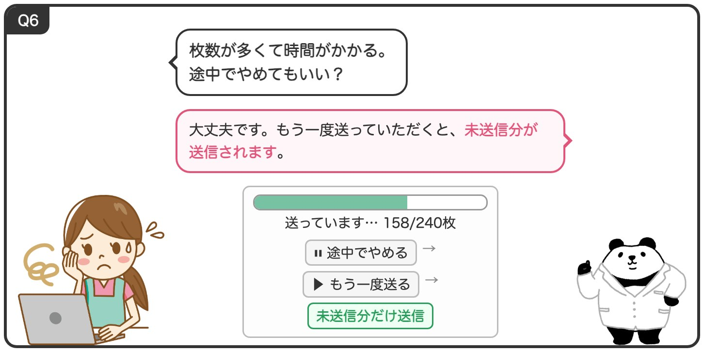
画像を押すと大きく開きます - Q7送れたかどうかは、どうやって分かる？
- 「ありがとうございました」の画面が出たら、送信は完了です。
→ 図解を見る
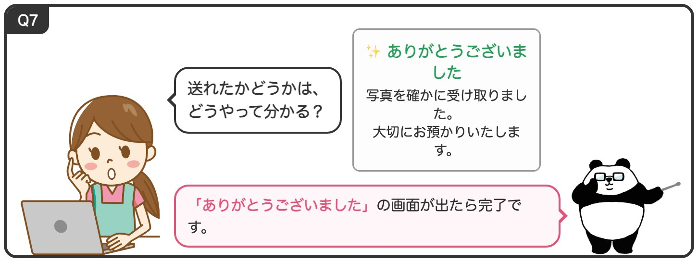
画像を押すと大きく開きます - Q8同じ写真を二度送ってしまった
- 一度送信したものは自動でスキップされます。ご安心ください。
→ 図解を見る
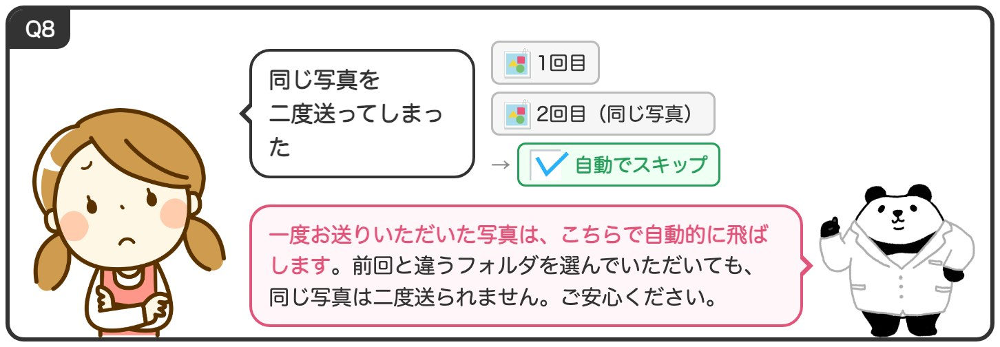
画像を押すと大きく開きます - Q9行事のたびに、何回も送っていい？
- はい。毎回同じ手順でお送りください。
→ 図解を見る
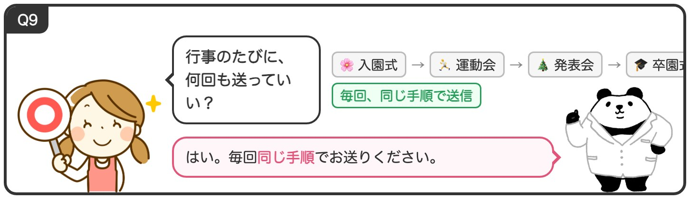
画像を押すと大きく開きます - Q10園のスマホで撮ったものを ICT や LINE WORKS にフォルダ分けして保存している。それをダウンロードして送ってもいい？
- ICT や LINE WORKS、その他のアプリを経由してダウンロードした写真や、スクリーンショットはお控えください。卒園アルバムの掲載に耐えられない画質サイズに変換されてしまいます。また、撮影日時が消去されるため、フォトソート（自動フォルダ分け）に大きな支障をきたします。必ず、どこも経由させていない元の写真をお送りください。操作スマホ本体（カメラロール）の写真を → ケーブルでパソコンに取り込む → いつもの親フォルダへ
→ 図解を見る
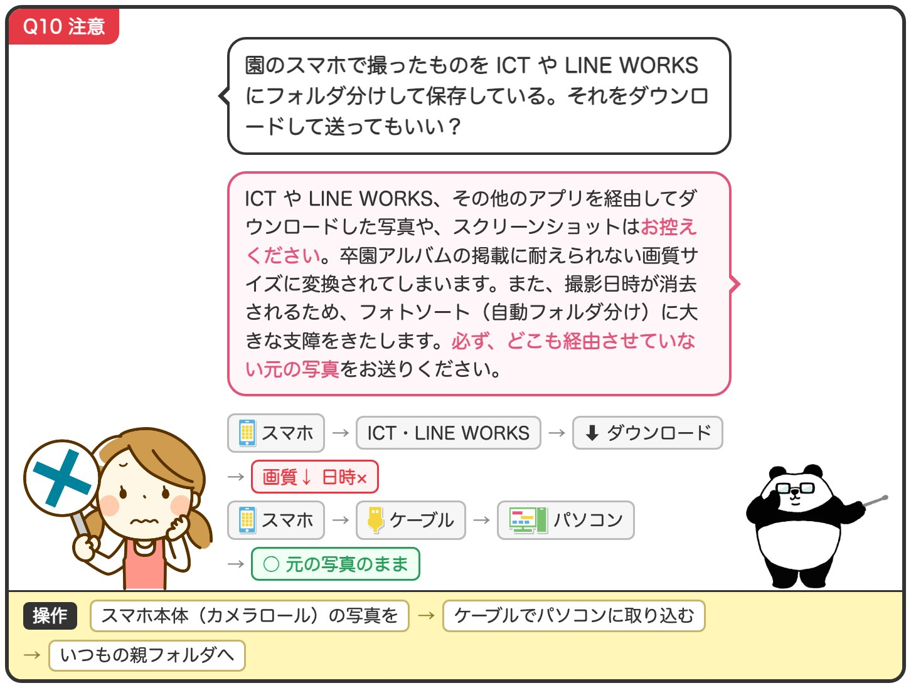
画像を押すと大きく開きます - Q11明るさを補正したい写真がある。送る前？あと？
- 補正は送る前に済ませてください。明るさの補正は大丈夫です。画像編集アプリでの加工（フィルター・スタンプ・文字入れ・切り抜き・傾き補正）は不要です。そのままの写真がいちばんきれいに仕上がります。
→ 図解を見る
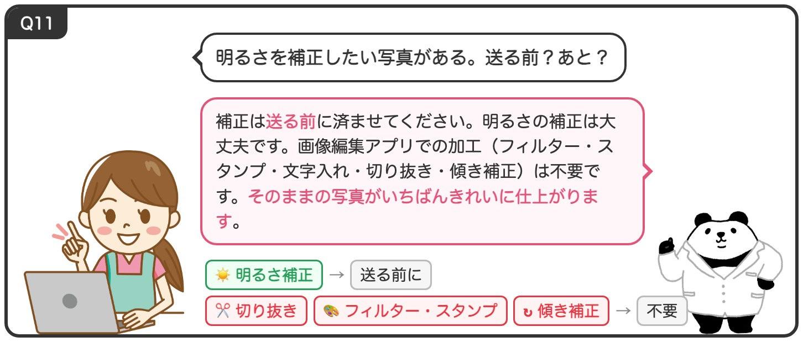
画像を押すと大きく開きます - Q12操作が分からなくなったら？
- 画面の文を、そのままメールでお知らせください。画面のスクリーンショットでも大丈夫です。操作画面の文をコピー、またはスクリーンショット → メールで送る
→ 図解を見る
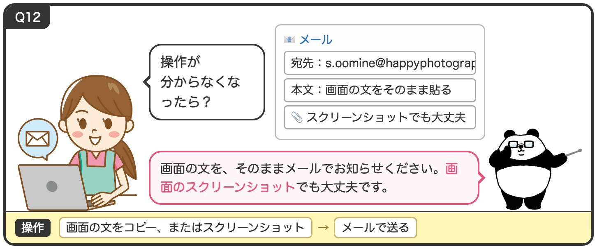
画像を押すと大きく開きます
まとめ：① URLを開いてパスワード ② 親フォルダを選んでチェック ③ 送るを押す
2見本写真の送り方9問
お顔の登録用。1人1枚・正面・名前を付けて
- Q1見本写真って、何？
- お子さまのお顔の「名札」になる写真です。見本写真そのものは、アルバムには載せません。
→ 図解を見る
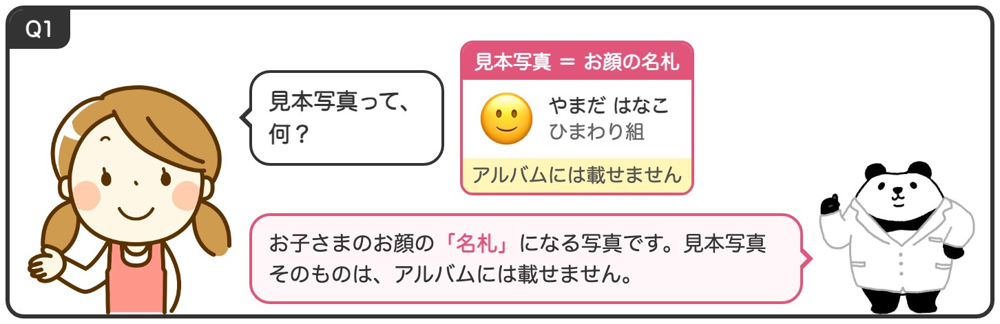
画像を押すと大きく開きます - Q2何枚いる？
- 1人1枚お願いします。0〜2歳のクラスは、お顔が変わるので1人2〜3枚（春と秋など）お願いします。
→ 図解を見る
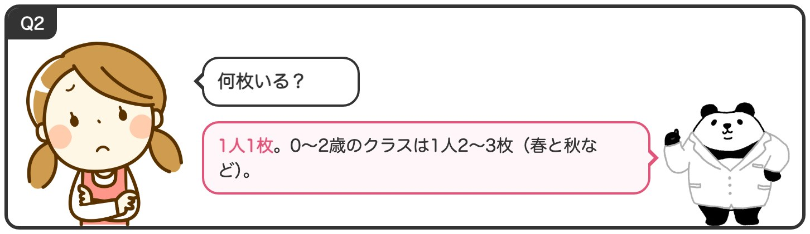
画像を押すと大きく開きます - Q3どんな写真がいい？
- 正面を向いていて、お顔が大きく、明るい場所で、1人で写っている写真をお願いします。1年以内に撮ったものが確実です。
→ 図解を見る
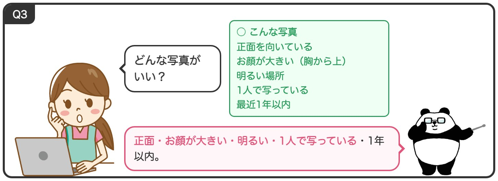
画像を押すと大きく開きます - Q4ダメな写真は？
- 横向き・帽子やマスクで目が隠れている・集合写真・暗い・ぶれている写真は、お顔を登録できません。
→ 図解を見る
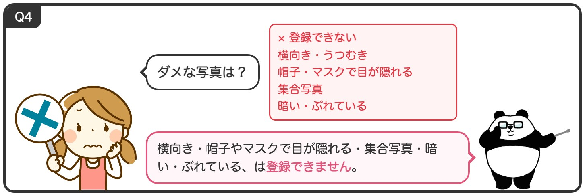
画像を押すと大きく開きます - Q5どこに入れる？
- いつもの親フォルダの中に「見本写真」というフォルダを作って、その中に入れてください。操作右クリック → 新しいフォルダ → 名前を「見本写真」にする
→ 図解を見る
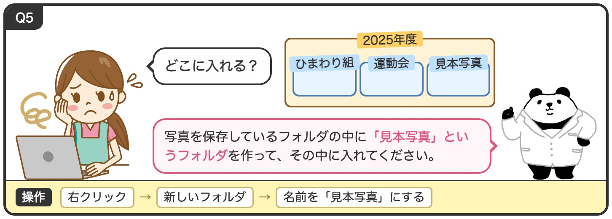
画像を押すと大きく開きます - Q6ファイルの名前はどうする？
- ファイル名をお子さまのお名前にしていただくと、お顔と名前のミスマッチがなくなります。差し支えがある場合はそのままで結構です（名簿を撮った画像を同じフォルダに入れていただく方法でも大丈夫です）。
→ 図解を見る
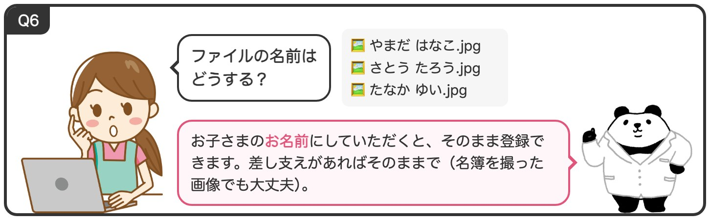
画像を押すと大きく開きます - Q7ICT・LINE WORKS に保存した写真でもいい？
- 見本写真も、どこも経由させていない元の写真をお願いします。アプリを経由した写真やスクリーンショットは画質が下がり、お顔の登録に支障が出ます（「写真の送り方」Q10もご覧ください）。操作スマホ本体の写真をパソコンに取り込む
→ 図解を見る
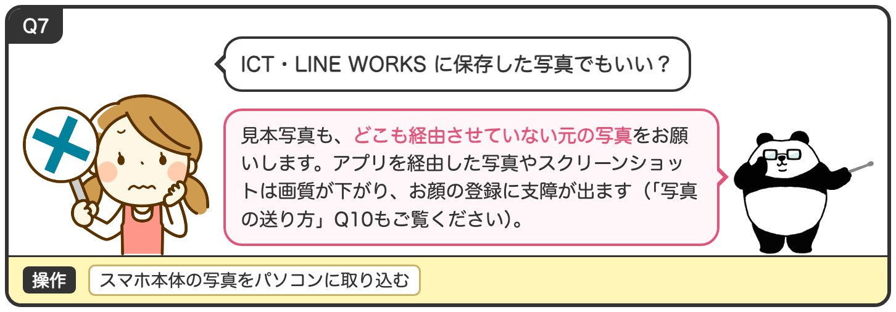
画像を押すと大きく開きます - Q8どう送る？
- 写真を送るときと同じ手順で、親フォルダを選び、「見本写真」にチェックして送ってください。
→ 図解を見る
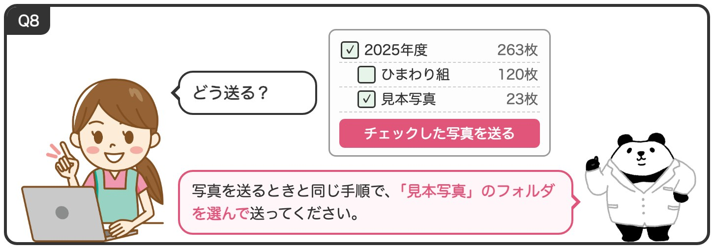
画像を押すと大きく開きます - Q9送った後は何をすればいい？
- 何もしていただかなくて大丈夫です。確認のためにご連絡させていただく場合がございます。操作追加・差し替えは、同じフォルダに入れて送り直していただくだけです
→ 図解を見る
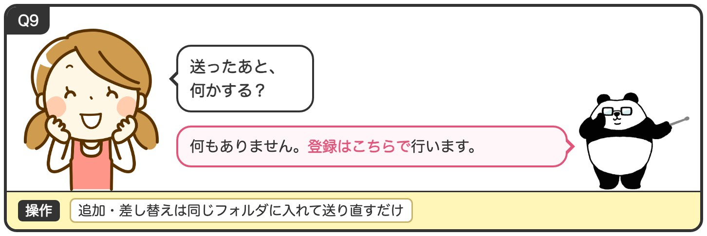
画像を押すと大きく開きます
まとめ：① 「見本写真」のフォルダを作る ② 1人1枚正面のお顔 ③ 名前を付けて送る
3PDFの送り方5問
行事予定表・文集の原稿など。写真と同じフォルダに入れるだけ
- Q1行事予定表はどう送る？
- 写真を送るときと同様に、写真と同じ親フォルダに入れて送ってください。操作PDFを写真の親フォルダへ入れる → チェック → 送る
→ 図解を見る
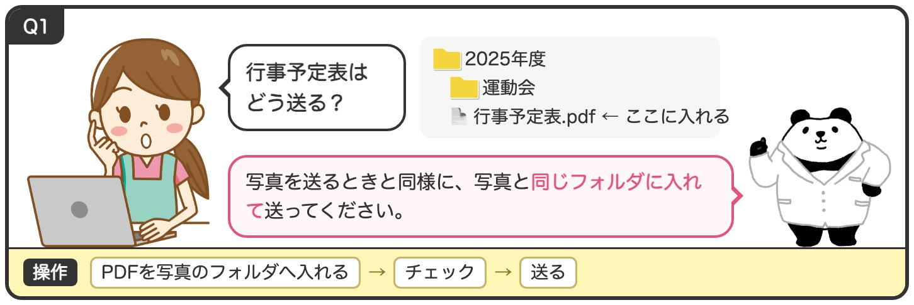
画像を押すと大きく開きます - Q2ボタンの文字が変わったけど？
- PDFが含まれていると、ボタンの表示が「チェックしたデータを送る」になります。そのままそのボタンを押していただければ、写真もPDFも一緒に送信されます。
→ 図解を見る
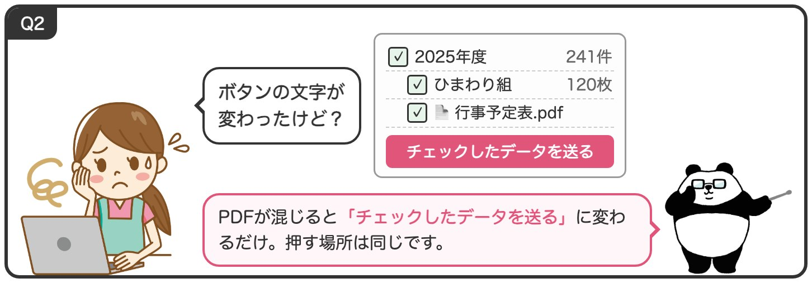
画像を押すと大きく開きます - Q3複数枚を一度に送る時の順番は？
- ファイル名の頭に「01_」「02_」と番号を付けていただくと、その順番で届きます。
→ 図解を見る
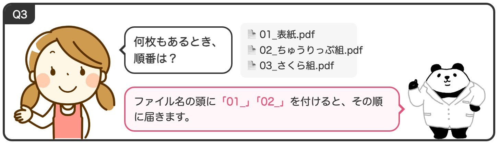
画像を押すと大きく開きます - Q4紙の予定表はあるけど、PDFのデータはない。
- スマホで撮った写真でも大丈夫です。まっすぐ、明るい場所で撮ってお送りください。
→ 図解を見る
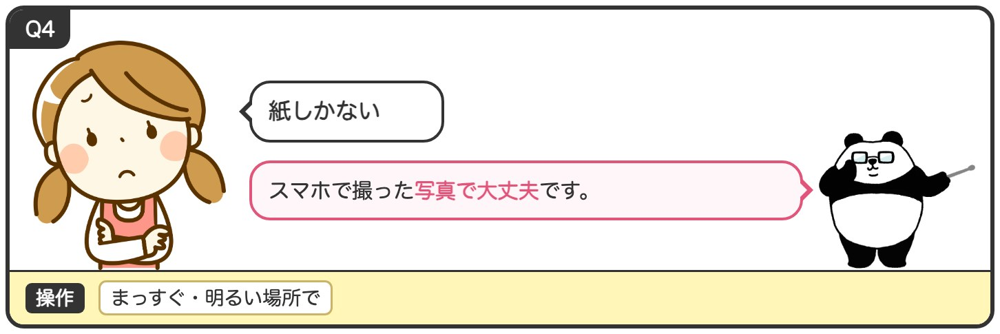
画像を押すと大きく開きます - Q5写真と混ざって困らない？
- 写真と混ざっていても困りません。安心してお送りください。
→ 図解を見る
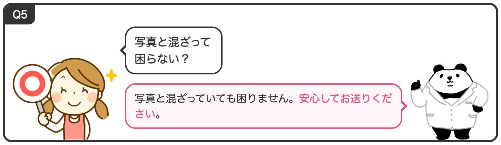
画像を押すと大きく開きます
まとめ：① PDFを写真のフォルダへ ② チェックして送る ③ 多いときは01_ 02_ の連番
4カメラの日時設定6問
撮影日時は、写真選定の大事な鍵です
- Q1カメラの日付、関係ある？
- あります。撮影日時は、写真選定の大事な鍵です。
→ 図解を見る
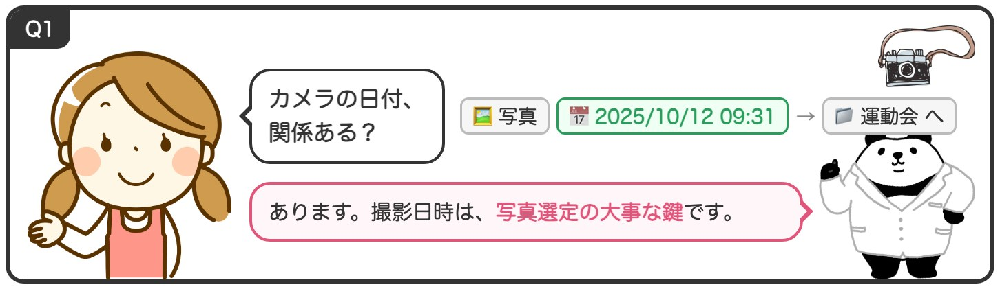
画像を押すと大きく開きます - Q2合っていないとどうなる？
- アルバム制作やフォルダ分けに支障をきたし、場合によっては納期が遅れてしまう可能性があります。
→ 図解を見る
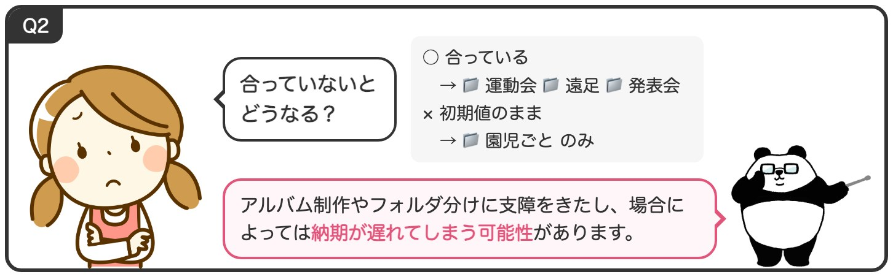
画像を押すと大きく開きます - Q3いつ確認すればいい？
- 年度のはじめと、久しぶりにカメラを使うとき。この2回、日時をご確認ください。操作充電が切れたまま置いておくと、日付が初期値に戻る機種があります
→ 図解を見る
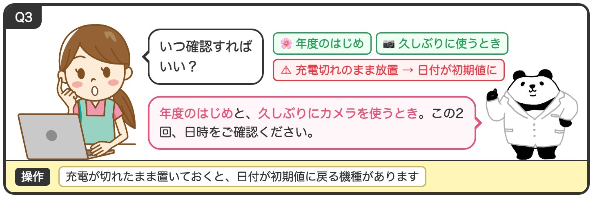
画像を押すと大きく開きます - Q4どうやって確認する？
- カメラのメニューの「日付／時刻」を今日に合わせてから、1枚撮って再生画面で日時を確かめてください。操作⚙️ メニュー → 日付／時刻 → 今日に合わせる → 1枚撮って再生で確認
→ 図解を見る
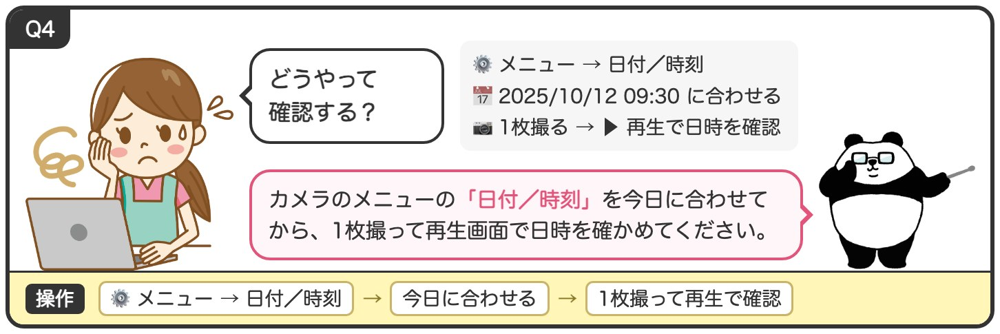
画像を押すと大きく開きます - Q5スマホやタブレットは？
- スマートフォンやタブレットは自動で日時が合いますので、確認は不要です。
→ 図解を見る
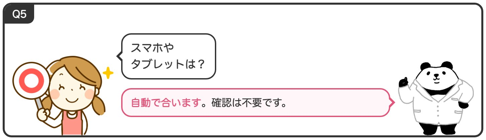
画像を押すと大きく開きます - Q6ずれていた写真を送ってしまった
- 写真はそのままで大丈夫です。日時のずれに気づいた時点で、こちらからご連絡します。
→ 図解を見る
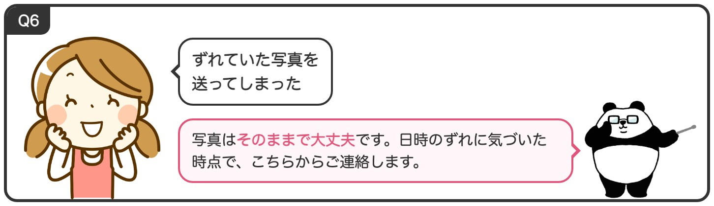
画像を押すと大きく開きます
まとめ：① 年度はじめに日付を確認 ② 久しぶりに使うときも確認 ③ スマホはそのままでOK
5送ったあと、写真を編集（補正）していい？8問
お子さまごとの振り分け（フォトソート）をご希望の園向け。振り分けが終わるまでのお願いです
振り分けの結果は「どの写真がどのお子さまか」の一覧表で園のパソコンに戻ります。写真が消えたり中身が変わったりすると、一覧表と写真が結びつかず、その写真はお子さまごとのフォルダに入れられません。振り分けが終わったあとは、自由に整理していただけます。
- Q1送ったあと、写真の名前を変えてもいい？
- 大丈夫です。名前を変えても、こちらで写真を見つけられます。
→ 図解を見る
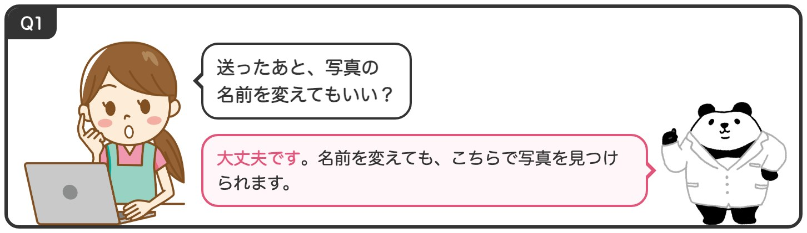
画像を押すと大きく開きます - Q2フォルダの中で整理（移動）してもいい？
- 親フォルダの中で移動するのは大丈夫です。親フォルダの外へ出すのはNGです。
→ 図解を見る
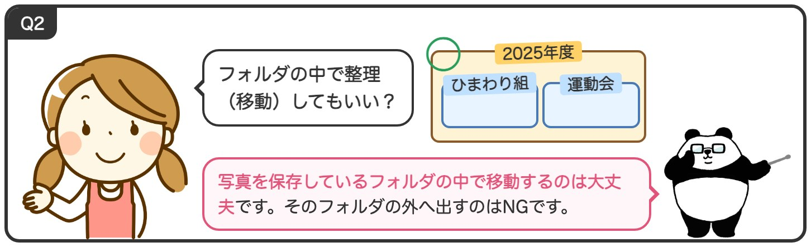
画像を押すと大きく開きます - Q3明るさを補正してもいい？
- 大丈夫です。ただし、明るさの補正だけにしてください。
→ 図解を見る
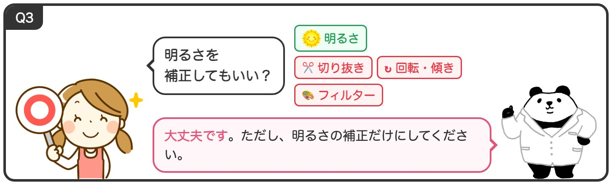
画像を押すと大きく開きます - Q4切り抜きや回転はいい？
- NGです。写真を使いたいときは、コピーを別の名前で保存してから編集してください。操作右クリック → 複製 → 名前を変えて編集
→ 図解を見る
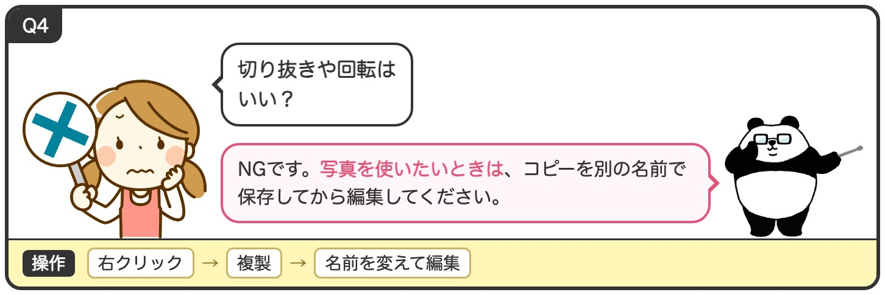
画像を押すと大きく開きます - Q5送信前なら編集していい？
- 明るさの補正は、送る前に済ませてください。切り抜き・傾き補正・フィルターは、送る前でもしないでください。そのままの写真がいちばんきれいに仕上がります。
→ 図解を見る
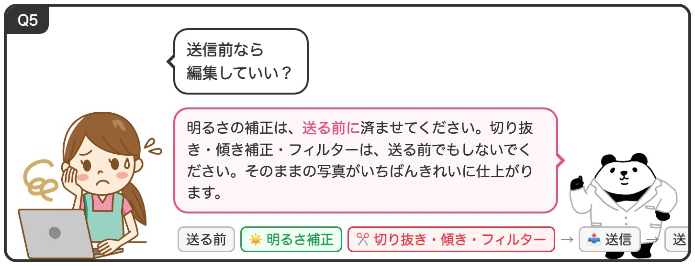
画像を押すと大きく開きます - Q6送ったあとに編集が必要になったら？
- コピーを別の名前で保存して、コピーの方を編集してください。元の写真はそのまま残してください。
→ 図解を見る
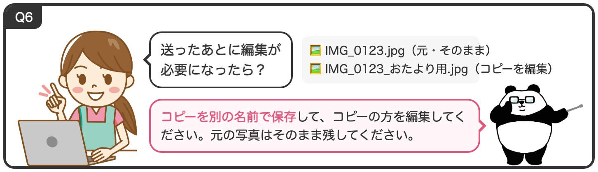
画像を押すと大きく開きます - Q7写真を消してもいい？
- 振り分けが終わるまでは、写真を消さないでください。消した写真は、お子さまごとのフォルダに入れられません。振り分けが終わったあとは、自由に整理していただけます。
→ 図解を見る
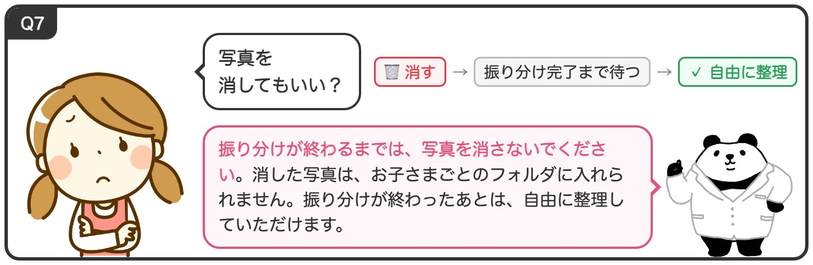
画像を押すと大きく開きます - Q8うっかり切り抜き・削除してしまった
- そのままで大丈夫です。その写真だけ「未分類」フォルダに入り、ほかの写真の振り分けには影響しません。操作ゴミ箱に残っていれば、元のフォルダへ戻してください
→ 図解を見る
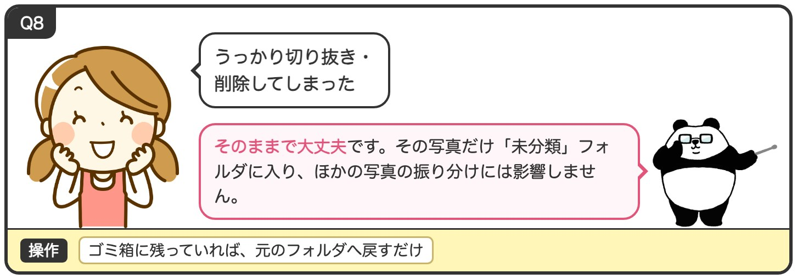
画像を押すと大きく開きます
仕組みを知りたい方へ
- Q仕分けた写真は、園のパソコンにどう戻るの？
- 写真そのものは送り返しません。「どの写真がどのお子さまか」の一覧表だけをお返しし、園のパソコンの中にある写真と突き合わせて、お子さまごとのフォルダを作ります。写真を送り合わないので、誤送信の心配がなく、受け取りも一瞬です。
- Qどうして名前を変えても見つかるの？
- 写真には、名前とは別に、中身から決まる「指紋」のようなものがあります。一覧表はその指紋で写真を探すので、名前が変わっても同じ写真だと分かります。切り抜きや回転をすると指紋が変わり、別の写真になってしまいます。
まとめ：① 送った写真はそのまま ② 使うときはコピーを別名で ③ 整理は振り分けが終わってから
お困りのとき
H.P.canvas株式会社（担当：大峯）
お電話 050-8886-8299
メール s.oomine@happyphotograph.com
うまく送れないときは、画面に出ているメッセージをそのままお知らせください。こちらで確認いたします。